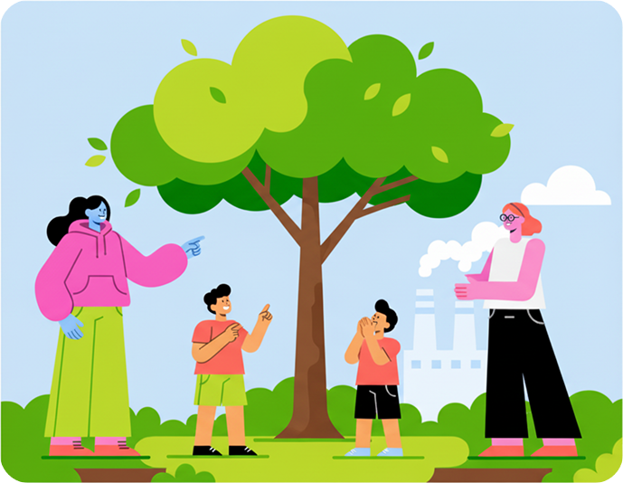

Let's work together to create a safer, cleaner environment for everyone
Together, we can make a difference and create a better world for ourselves and future generations, let's take action now to reduce pollution and protect our planet!
Let's work together

The Problem
- Invisible Threat: Air pollution is constantly harming your health, especially in cities.
- Scattered Data: Air quality info is generic, complex, and unlinked to personal health.
- No Personal Guidance: You lack clear, personalized advice on how to protect yourself.
- High-Risk Activities: Outdoor exercise or play becomes a health gamble due to unseen toxins.
- Ignorance is Not Bliss: Most people are unaware of the immediate air quality danger around them.
→
Our Solution
- Instant Smart Data: Get accurate, real-time air quality information for your exact location.
- Personal Health Analysis: Receive customized advice based on your health profile and daily activity.
- Instant Alerts: Get notifications when air quality deteriorates nearby.
- Health-First Approach: We link environmental data directly to your personal well-being and safety.
- Breathe with Confidence: The "Aura Breathe" shield gives you a feeling of security and protection.